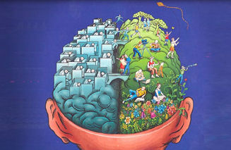
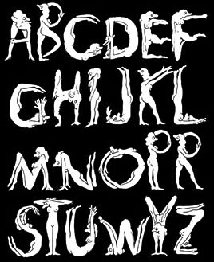
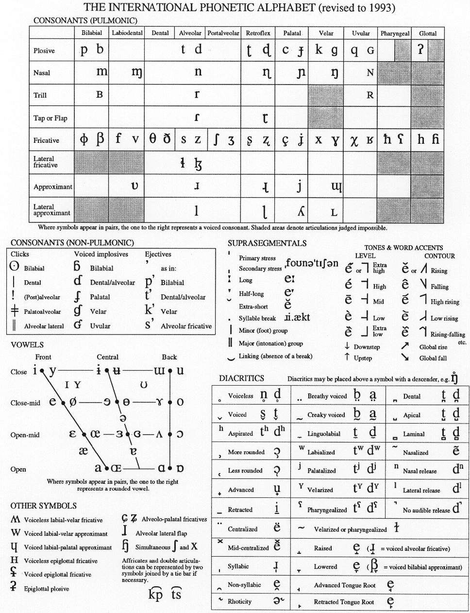
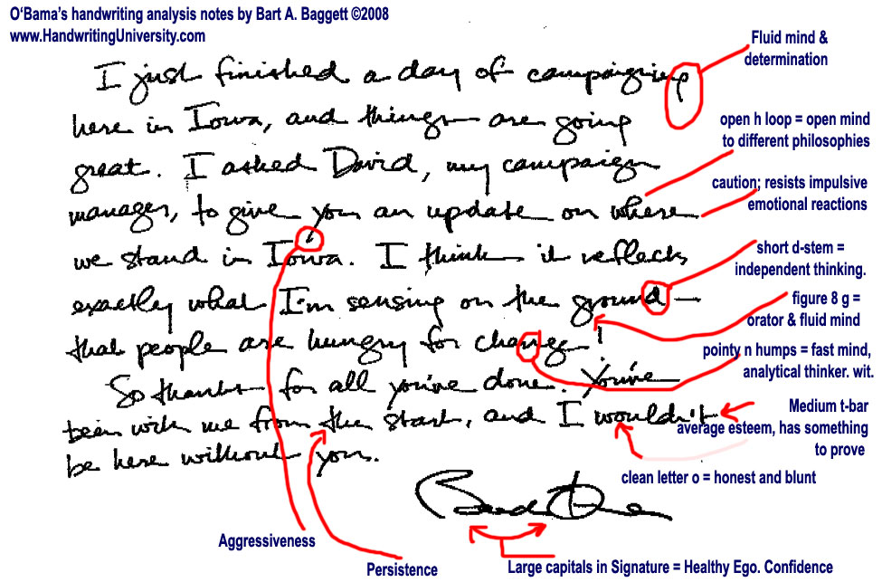

International
InternationalMiędzy półkulami mózgu a stenografią
2011-01-24 | autor: flamenco108W ostatniej fazie ewolucji zmierzającej do homo sapiens modern, mózg ludzki przechodził dynamiczne przemiany. Wraz z budową nowej jakości - kultury - gwałtownie rosła liczba informacji do przetworzenia. Mogło to zaowocować powtórzeniem znanego już chwytu - nadbudowaniem kory mózgowej kolejną, nową warstwą. Jednak zmiany zachodziły o wiele szybciej niż możliwości ewolucji genetycznej, zatem rozwiązaniem problemu musiały zająć się już istniejące neurony.
Istnienie dwóch półkul mózgowych nie jest niczym nowym w świecie zwierząt - nietypowe dla człowieka jest posiadanie nadzwyczaj rozbudowanej kory oraz potężnego połączenia między półkulami. Specjalizacja półkul mózgowych pozwoliła na zwiększenie zdolności przetwarzania abstrakcyjnych informacji w nowym środowisku, już niezupełnie naturalnym, a kulturowym, gdzie dwunożne zwierzę staje się człowiekiem przez zdolność do posługiwania się rozlicznymi narzędziami, posiadanie samoświadomości, zdolności do autorefleksji, samokontroli i samoregulacji, wreszcie opanowania mowy oraz mnóstwa innych metod wymiany informacji pomiędzy jednostkami.

Wynalazek mowy wprowadził do ludzkiego umysłu nową jakość. Nie tylko możliwość komunikacji z innymi, ale też z samym sobą. Kot nie może kontrolować swoich uczuć, ponieważ ich nie nazywa, a zatem nie są dla niego rzeczą, którą może się posłużyć. Pojawienie się emocji jest równoważne z podniesieniem ogona, czy też nastroszeniem sierści. Człowiek nie tylko może kontrolować reakcje swojego ciała, ale poprzez niesamowity interfejs, wywoływać je pozornie z niczego. Tym punktem wejścia-wyjścia jest słowo (wyrażenie).
Mowa składająca się z dźwięków przekładających się na pojęcia jest bardzo wygodną metodą zarządzania wewnętrzną i zewnętrzną informacją. A jej wyższym poziomem, w którym zastosowanie symbolu ma jeszcze większe znaczenie, jest - pismo. W świecie komputerów można je porównać do wynalazku pamięci nieulotnej o szybkim czasie odczytu - niewielka prędkość zapisu pierwotnie nie miała wielkiego znaczenia wobec rewolucji, jaką była możność wielokrotnego dostępu do raz zapisanych danych bez korzystania z pomocy żywego nośnika - człowieka - gawędziarza. Informacja zapisana może być przechowywana w dużych ilościach, przez bardzo długi czas (nie raz dłuższy niż kultura, która dokonała zapisu).

Stąd ze wszech miar uzasadnione będzie użycie pojęcia języka pisanego dla wszelkich form utrwalania informacji przy pomocy pisma, szczególnie, że nie wszędzie na świecie język pisany stanowi zwierciadlane odbicie języka mówionego.
Z jednej strony mowa, niczym z atomów, składa się z dźwięków - fonemów, składanych w głoski, zgłoski, słowa. Z drugiej strony mowa jest przecież nośnikiem pojęć, które te dźwięki kodują. Język pisany, jako nowy sposób kodowania, może zostać utworzony zatem jako pochodna fonemów, lub pojęć. Historia pokazuje, że ta druga metoda jest pierwotna, zaś kodowanie pismem fonetycznym stanowi wtórne, nowocześniejsze podejście do języka pisanego.
U Europejczyków funkcje związane z mówieniem, czytaniem i pisaniem ulokowane są w lewej półkuli mózgowej. Przeciwnie u Azjatów z Dalekiego Wschodu, którzy pismo, czytanie i mówienie mają w półkuli prawej. Zostało to potwierdzone w raportach lekarzy wojskowych, którzy stwierdzili, że Azjata z uszkodzoną lewą półkulą mózgu nie traci zdolności komunikacyjnych, w przeciwieństwie do Europejczyka. I odwrotnie, uszkodzenie prawej półkuli bardziej szkodzi Azjacie. Ot, ciekawostka. Czyżby położenie funkcji komunikatywnych zależało od przyjętego w narodzie alfabetu? Czym wytłumaczyć taką różnicę? Nie prowadzę jednakowoż stron o neurologii, więc nie tym tutaj się będziemy zajmować.
Rzeczywiście, jedyną nie-wspólną cechą systemów komunikacyjnych kultury europejskiej i z Dalekiego Wschodu jest pismo: u nas posługujemy się alfabetami, czyli odtwarzamy dźwięki, oni używają pochodnej pisma obrazkowego i zapisują pojęcia. Czyli pisanie alfabetyczne lokalizuje mowę, komunikację, pamięć w lewej półkuli, a hieroglificzne - w prawej. Czy wpływa to też na sposób myślenia (Europejczycy myśleliby wtedy pojęciami i schematami, Azjaci obrazami)?

Alfabety dźwiękoodwórcze (czyli tutejsze) wyewoluowały z hieroglifów egipskiego pisma: alfabety fenickie, greckie, hebrajskie, od których narodziło się mnóstwo pochodnych, aż do dzisiejszych czasów. Odtwarzanie brzmienia mowy stało się wskazówką dla przyszłych twórców systemów stenograficznych - osiągnąć prędkość artykulacji języka pisanego równą językowi mówionemu. Konwersja audio-video. Jak to zrobić? Przez symbole pojęciowe. Z lewej półkuli do prawej. Z powrotem z sekwencyjnego zapisu mowy do pojęciowego - podstawą szybkiej stenografii są symboliczne znaczniki zastępujące pojęcia, a pismo szybkie, dźwiękoodtwórcze uzupełnia zapis o słowa rzadziej spotykane. W ten sposób mamy połączone względną łatwość uczenia się pisma z wielką jego prędkością. Odczyt znaków symbolicznych, dla kogoś, kto dobrze je opanował, jest prosty i szybki, a jednocześnie pozbawiony wątpliwości.
Wynikałoby z powyższych swobodnych rozważań, że stenografia jest szczytowym połączeniem znanych technik pisania, znacznie przewyższającym zarówno pismo ideograficzne z Dalekiego Wschodu, jak i abecadła basenu Morza Śródziemnego. Nic, tylko z mnóstwa dostępnych systemów wybrać ten możliwie uniwersalny (lub zapewnić jego uniwersalność innymi metodami, podobnie jak od niedawna dzieje się to z alfabetem łacińskim -> patrz np. pismo IPA) i dokonać rewolucji.

Oczywiście, dziś to już (jeszcze?) niemożliwe. W modę weszły komputery, urządzenia klikane i stukane, znaki alfabetyczne dostajemy w formie czcionek, których kształt nie budzi żadnych wątpliwości. Na razie obserwujemy zmierzch pisma odręcznego. Z drugiej strony, alfabet łaciński zdobywa sobie kolejne przyczółki - każdy wykształcony człowiek na całym świecie winien znać przynajmniej jego zakres objęty tablicą ASCII. A w większości języków opracowano “ortografię” pisania literami ASCII, co samo w sobie stanowi przyczynek do uniwersalnej stenografii maszynowej.

Jak to będzie, zobaczymy. Skoro już mowa była o mózgu, jego półkulach i piśmie, na koniec warto zamieścić wzmiankę, którą rozwinę w innych artykułach:
W USA przeprowadzono badanie na milionach maturzystów. Okazało się, że ci, którzy nie zapomnieli, jak się pisze odręcznie, otrzymywali wyższe noty z wypracowań na egzaminie maturalnym, zwrócono uwagę na lepszą logikę wywodu, słownictwo, stylistykę i poprawność zapisu. Młodzież wytresowana już tylko do klikania, na pisemnym wypracowaniu posługiwała się literami “drukowanymi” i wyraźnie uzyskiwała gorsze wyniki. Bardziej szczegółowo na ten temat w innym artykule.
Pa.
2011-01-24 autor: flamenco108